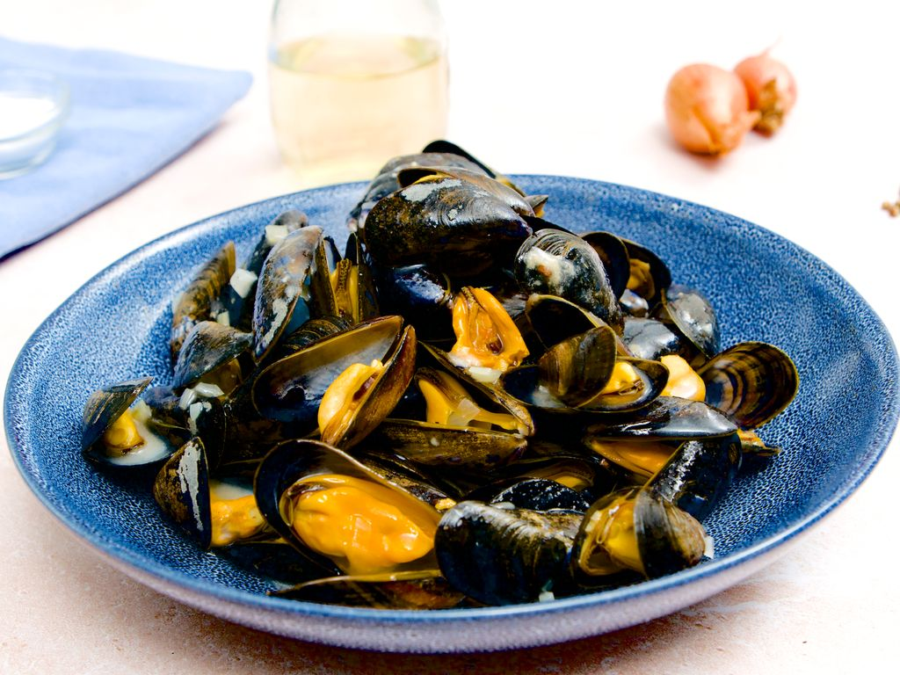

Moule Mariniere

Underbara vinkokta Musslor
Moule Mariniere är en klassisk fransk maträtt som består av musslor kokta i vitt vin, vitlök, schalottenlök, persilja och grädde. Denna rätt är enkel att laga och är perfekt som förrätt eller huvudrätt tillsammans med ett gott bröd för att suga upp den läckra såsen.
Ingerdienser
- 1 kg färska musslor
- 2 msk olivolja
- 2 schalottenlökar, finhackade
- 2 vitlöksklyftor, finhackade
- 250 ml torrt vitt vin
- 200 ml grädde
- 1 knippe färsk persilja, hackad
- Salt och peppar efter smak
- Bröd för servering
Instruktioner
- Rengör musslorna noggrant under kallt vatten och ta bort eventuella skägg.
- Värm olivoljan i en stor kastrull över medelhög värme. Tillsätt schalottenlök och vitlök och fräs tills de är mjuka och doftande, cirka 2-3 minuter.
- Tillsätt det vita vinet och låt det koka upp. Låt det sjuda i några minuter för att reducera något.
- Tillsätt musslorna i kastrullen och täck med ett lock. Låt dem koka i 5-7 minuter, eller tills musslorna har öppnat sig. Skaka kastrullen då och då för att fördela värmen jämnt.
- Ta bort musslorna med en hålslev och lägg dem i en serveringsskål. Kassera eventuella musslor som inte har öppnat sig.
- Tillsätt grädden till kastrullen med musselspadet och låt det sjuda i några minuter tills såsen tjocknar något. Smaka av med salt och peppar.
- Häll såsen över musslorna och strö över hackad persilja.
- Servera genast med bröd för att suga upp den läckra såsen.
Home